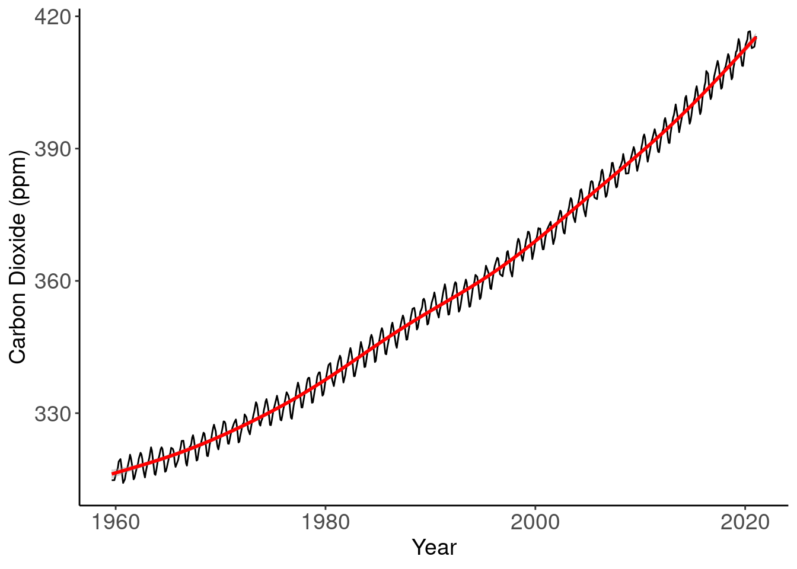

Environmental Sciences in East Asia
2021-02-11
Chapter 1 Preface
1.1 Context and Positionality
1.2 Project Guide
1.2.1 Rationale
Learning science and communicating science are two sides of a coin – and as an interatrive process, we will learn and write about environmental issues and sciences in East Asia by creating a web-based text.
1.2.2 Stages of Work and Milestones
After selection a topic, each student will be a lead author and a contributing author for a particular text, which will in most cased be a chapter.
Since writing is an iterative process, we will use various processes to review, revise, and improve our text. The text will be published on the EA Student Webpage at the conclusion of the course.
1.2.2.1 Proposed Schedule
- Feb 12 Assign Authors and Contributors
- Feb 17 Draft Outline
- Feb 24 Research Report
- March 2 Draft Text
- March 9 Peer Reviews
- March 20 Revised Text for Grading
- March 31 Final Revision
- April 3 Gap Identification
- April 10 Scoping Research
- April 17 Draft Outline
- April 24 Draft Text
- April 30 Peer Review
- May X 5, Submission for Grading
1.2.3 Grading
TBD
1.3 Revision History and Process
1.3.1 Publication Dates
I will regularly push and publish the results of the text based on submissions.
1.3.2 Using R Markdown
In the past, I used to make publication quality text, but because we will to make this into a on-line resource, creating HTML code is a better option.
R Markdown is a relatively simple language to use and will allow us to integrate text and data science into the web text.
I have provided some basic resources for R Markdown, but there are numerous electronic resources available for free that can also be consulted.
1.3.3 Using R to Create Figures
In Figure
